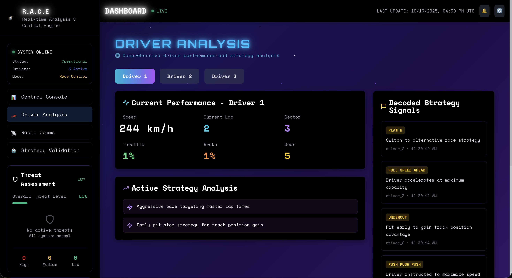
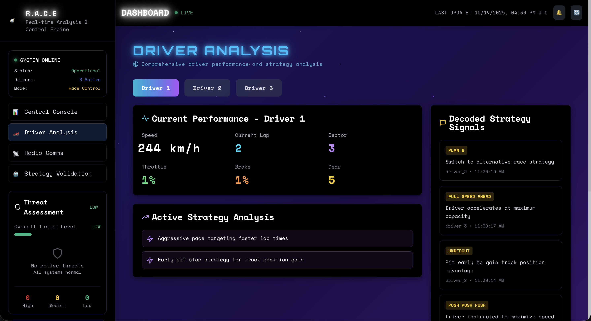
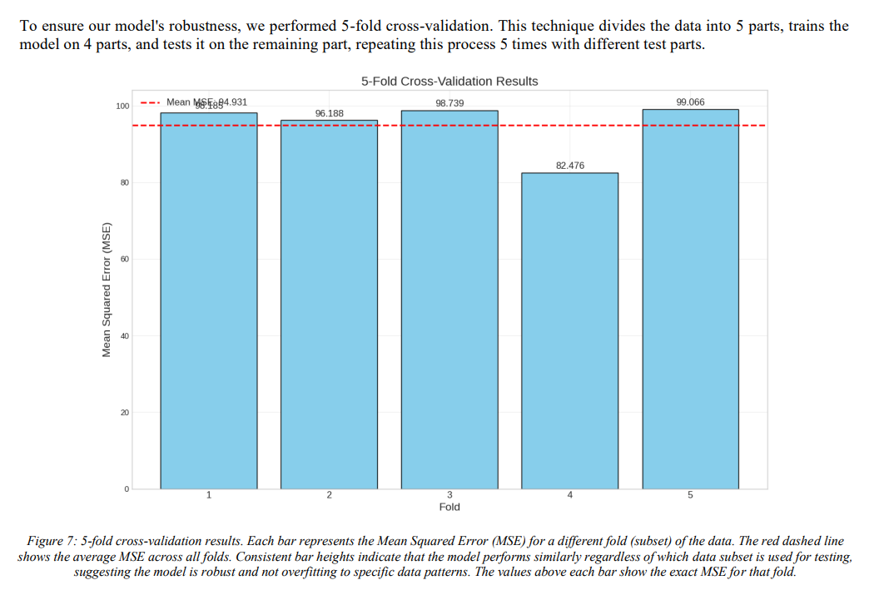
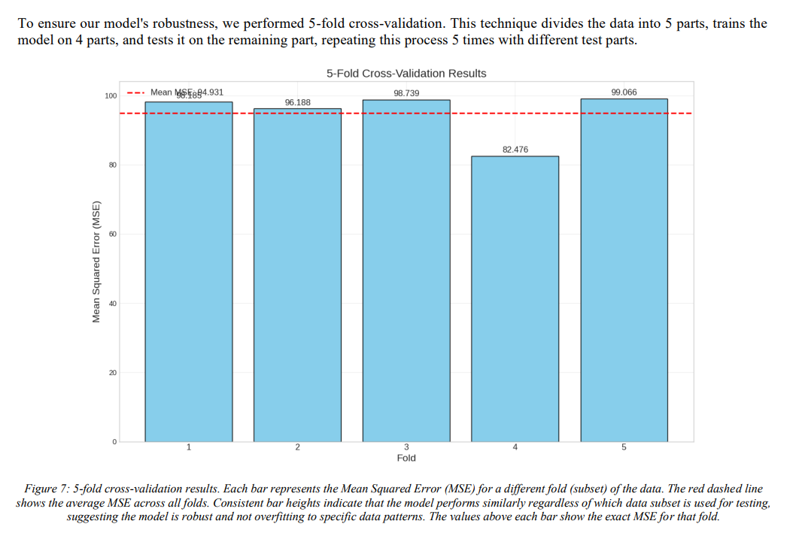

Dhivyesh Prithiviraj
Computer Engineering @ University of Texas at Dallas
Versatile Software and App Developer with a strong foundation in machine learning and engineering-focused applications. Experienced in building intelligent systems using Python, TensorFlow, and PyTorch, and developing responsive web and iOS applications. Skilled at integrating data-driven insights into scalable, real-world software solutions.
I first got into programming in high school by building small chatbots and automation tools, and that early curiosity grew into a passion for creating software that solves real problems. I learned quickly that I enjoyed building things that people could actually use, whether it was a simple script or a full application.
At UT Dallas, I’ve expanded that interest into full-stack development, machine learning, and cloud engineering. I’ve built production-ready systems - from a React Native education app serving 300+ users at NRVE to ACM’s event platform that helped onboard hundreds of students. My research in the Reliability and Design Automation Lab allowed me to combine physics-based modeling with machine learning, developing PIML models for battery health and fluid behavior.
Outside the classroom, I help run logistics for HackUTD and take on freelance design work, blending technical thinking with creativity. Across all my projects - ASL-to-speech translation, calorie prediction with Azure, automation tools, and more - I focus on building systems that are fast, scalable, and meaningful to the people who use them.
Skills
Programming Languages
Tools and Frameworks
Experience

Software Development Lead
May 2025 – PresentAssociation for Computing Machinery – Outreach | Dallas, TX
- Developed a full-stack event platform using React, TypeScript, and Firebase that onboarded 200+ high school students, facilitating team formation, project submissions, and event registration.
- Built a matchmaking algorithm with TypeScript and Firebase Firestore that accelerated team formation by 65%, enhancing participant collaboration and project quality.
- Redesigned the website frontend with ReactJS and Tailwind CSS, improving load time by 40%.

Software Engineering Intern / Project Manager
June 2025 – August 2025NRVE | Dallas, TX
- Built a personalized education app using React Native, Firebase, and Python, serving 300+ beta users.
- Designed and implemented cloud infrastructure using AWS SageMaker for ML model deployment, AWS Lambda for serverless compute, and Terraform to automate resource provisioning, reducing deployment time by 30%.
- Established CI/CD pipelines with automated testing and version control using Git, improving release efficiency and ensuring code quality across multiple sprint cycles.
Design Engineer, Powertrain
August 2024 – August 2025UTD Society of Automotive Engineers | Dallas, TX
- Conducted advanced CAD modeling and Finite Element Analysis (FEA) in SolidWorks to identify and mitigate 10+ potential failure points in powertrain components.
- Optimized thermal management and enhanced cooling efficiency by designing and refining a custom radiator fan.
- Developed and presented a prototype oil catch can design, evaluating its theoretical efficiency and impact on engine performance.

Data Analytics Intern
January 2024 – June 2024Accenture | Remote
- Analyzed a Social Buzz dataset with 10,000+ daily entries, using NumPy and Pandas to clean data, identify trends, and rank the top 5 content categories based on engagement.
- Synthesized complex datasets and presented insights using advanced data visualization techniques, enabling Accenture to drive 15+ strategic decisions based on 20+ key project insights.
Technical Ambassador & AI Program Lead
October 2022 – November 2023Mark Cuban Foundation | Dallas, TX
- Built and deployed a full-stack Computer Vision web application using Microsoft Azure to detect calorie content in food images; integrated real-time image processing and hosted it on a public-facing website.
- Mentored over 1,500 students across nationwide AI bootcamps; collaborated with 15 ambassadors to co-develop technical curricula and lead hands-on ML sessions.
- Designed data-driven outreach strategies and interactive content, increasing program engagement by 20% across diverse high school audiences.
Projects & Research
R.A.C.E. - Real-time Analysis & Control Engine (F1 Telemetry + Radio AI)
October 2025
 

- Built an AI race-engineer system that learns driver behavior and links telemetry anomalies with radio "codewords", using Kafka, Spark Streaming, and ElevenLabs STT + Emotion Embeddings.
- Designed a real-time Next.js + Tailwind dashboard showing race trends, deviations, and strategy triggers; backend powered by FastAPI, Redis, and MSK Kafka.
- Deployed a multi-cloud data pipeline across AWS (EMR, Glue, S3, Athena) and DigitalOcean Kubernetes, fully managed through Terraform.
- Built a custom race simulator generating synchronized telemetry + radio streams to test LLM-based (Gemini) strategy insights.
Vertera
March 2024


- Developed a comprehensive data analytics platform for small businesses using React, Node.js, and MongoDB.
- Implemented real-time data visualization with D3.js and Chart.js for interactive business insights.
- Created a custom dashboard with drag-and-drop functionality for personalized data views.
- Integrated machine learning algorithms for predictive analytics and trend forecasting.
Undergraduate Researcher - Reliability and Design Automation Lab
University of Texas at Dallas | Dallas, TX | January 2025 – Present
 

Developed Physics-Informed Machine Learning (PIML) models for battery life prediction using Python, Scikit-learn, TensorFlow, and PyTorch. Engineered features from the BatteryLife dataset, applied standard scaling, and trained multivariate linear regression models. Evaluated models with MSE, MAE, R², and MAPE metrics, validated robustness using 5-fold cross-validation, and performed residual and relative error analysis. Generated synthetic data for benchmarking and integrated Conformal Prediction frameworks to quantify model uncertainty.
View PaperSeatSwap
November 2024
- Collaborated with a team of 3 on developing a flight seat-swapping app to enable real-time seat availability.
- Integrated American Airlines API with RESTful services using Express for seamless seat swaps.
- Designed an MVP with an intuitive UI, secure JWT authentication, seat preference filters, and a request management system, deployed on AWS.
My Education
Bachelor of Computer Engineering
University of Texas at Dallas
2024 August – present